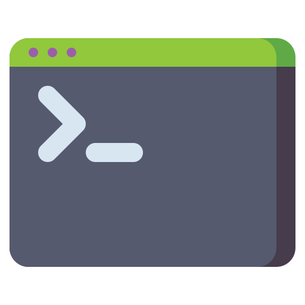

01
Introduction to Open Source
- What is Open Source?Philosophy of open source, real-world examples, and why it matters in modern software
- Licenses & LegalityMIT, Apache, GPL — what they allow, restrict, and why choosing the right license matters
- The OS EcosystemFamous projects (Linux, Python, VS Code), companies that invest in open source, and career benefits
- Anatomy of a GitHub RepoREADME, Issues, Pull Requests, Stars, Forks, Discussions — understanding every section of a repo

Module 1 Assignment: Explore & Report
Pick 3 popular open source projects, analyze their structure, licenses, and contributor activity, and write a brief comparison report.